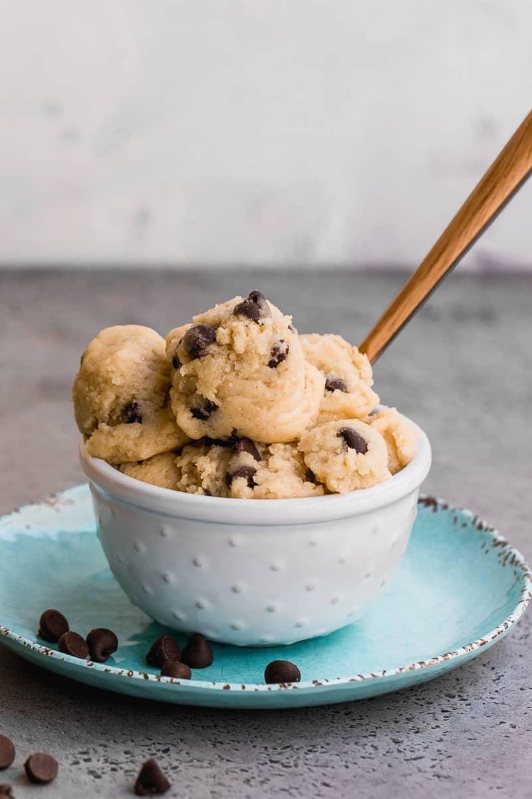

Cream of Wheat Cookie Dough
Why settle for sneaking a spoonful of cookie dough when you can have
so much more? Try this no-bake homemade cookie dough for a delicious treat.

Ingridients:
- 2/3 cup light brown sugar
- 1/2 cup peanut butter, crunchy
- 1/3 cup unsalted butter, softened
- 2 medium-sized bananas, mashed
- 1 teaspoon Spice Islands® Pure Vanilla Extract
- 1 1/4 cups Original Cream of Wheat® cereal
- 1/2 cup flour (heat treated)
- 1 cup chocolate chips
Steps:
- Place sugar, peanut butter, butter, mashed bananas, and vanilla in large bowl
of electric mixer fitted with paddle attachment, or mix by hand using a spoon.
Beat on medium speed until mixture is well blended.
- Add uncooked cereal and flour; beat until dough stiffens. Fold in chocolate chips.